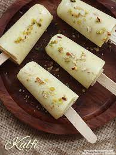

Malai Kulfi is a creamy and delicious Indian frozen dessert made with full cream milk, sugar, and a variety of flavorings. Known for its rich and smooth texture, it's often garnished with cardamom and nuts, making it a delightful treat during warm weather.
Ingredients
- 2 cups Full Cream Milk
- 1/2 cup Condensed Milk
- 1/4 cup Heavy Cream
- 1/4 cup Chopped Nuts (cashews, almonds)
- 1/2 tsp Cardamom Powder
- 2 tbsp Milk Powder
- 1/4 cup Saffron Milk (optional, for flavor)
Step-by-Step Instructions
- In a heavy-bottomed pan, bring the milk to a boil. Reduce heat and simmer, stirring frequently, until the milk reduces to about half its volume.
- Add condensed milk and milk powder to the pan. Stir well to combine and cook for an additional 5 minutes.
- Remove from heat and stir in the heavy cream, cardamom powder, and saffron milk if using. Mix thoroughly.
- Pour the mixture into kulfi molds or any small containers. Garnish with chopped nuts if desired.
- Freeze for at least 6 hours or until solid. To serve, dip the molds briefly in warm water to loosen the kulfi, then unmold and enjoy.